Things I've built
A collection of academic, professional, and personal projects spanning machine learning, software development, and data science.
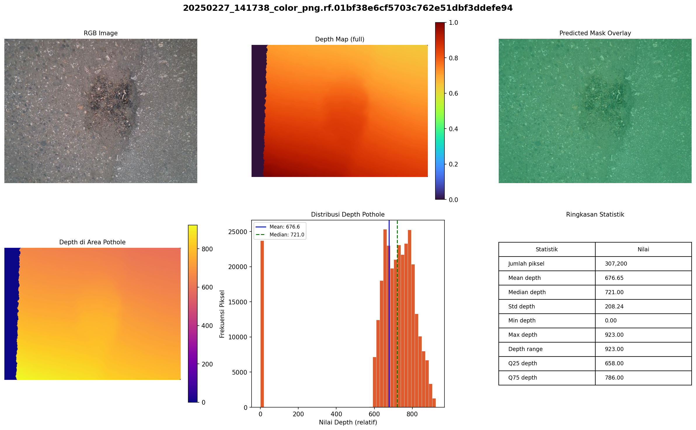
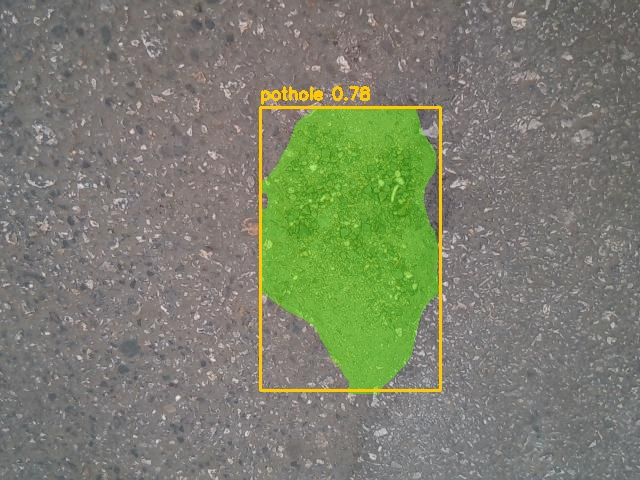
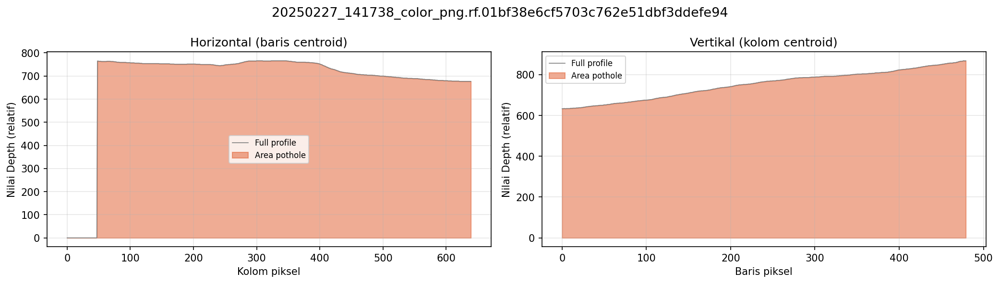
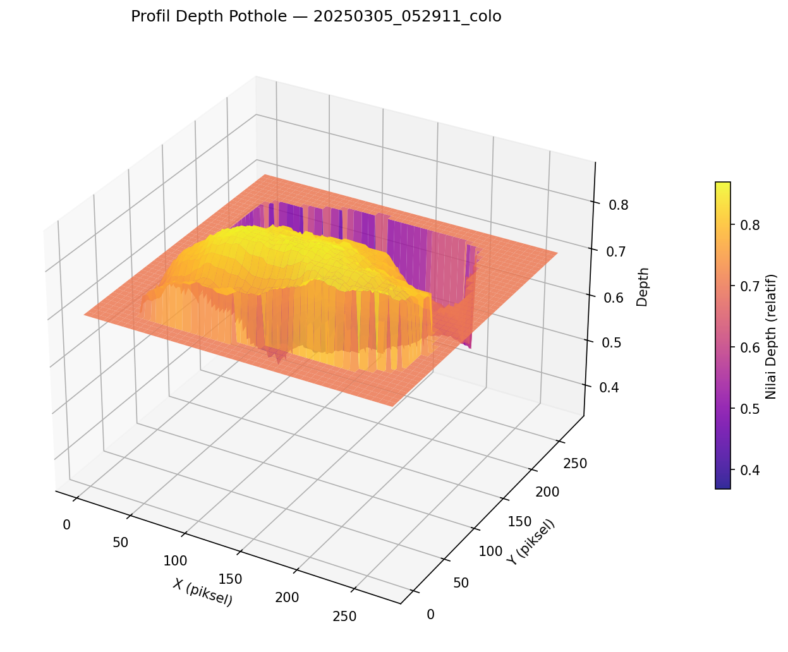
PothRGBD: Pothole Detection with YOLOv8-Seg
A pothole detection and segmentation pipeline built on YOLOv8-Seg using the PothRGBD RGB-D dataset from Kaggle. The model was trained to accurately segment road damage from paired RGB and depth imagery, followed by depth-based post-processing for visualization and statistical analysis. Achieved a Mask mAP@50 of 97.20% and a Mask mAP@50-95 of 63.96%.

YOLO-SIBI: Real-Time Indonesian Sign Language Recognition
A real-time Indonesian Sign Language (SIBI) recognition system combining YOLOv8 hand detection with deep learning image classifiers. The application detects hand gestures from a webcam, classifies the corresponding alphabet, and displays prediction confidence in real time. DenseNet121 achieved the best classification accuracy of 89.88%.
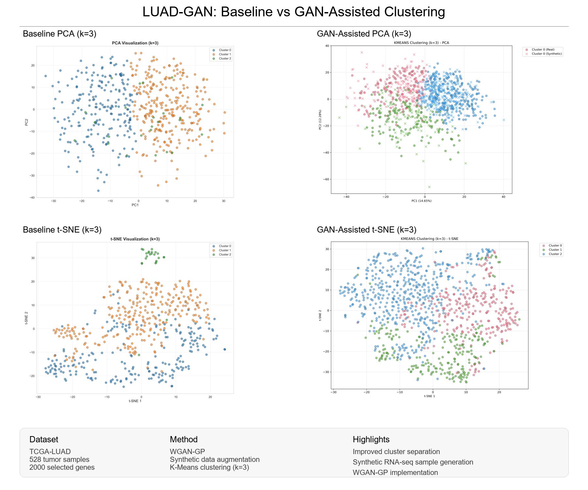
LUAD-GAN: GAN-Assisted Clustering for Lung Adenocarcinoma
A deep learning framework for improving unsupervised clustering of Lung Adenocarcinoma (LUAD) gene expression data using WGAN-GP. The pipeline generates synthetic RNA-seq samples to augment the TCGA-LUAD dataset, enhancing clustering quality while providing an interactive Streamlit interface for training, visualization, and comparative analysis.
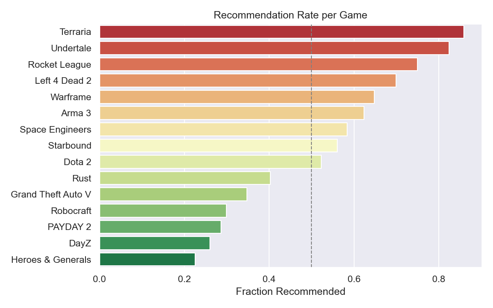
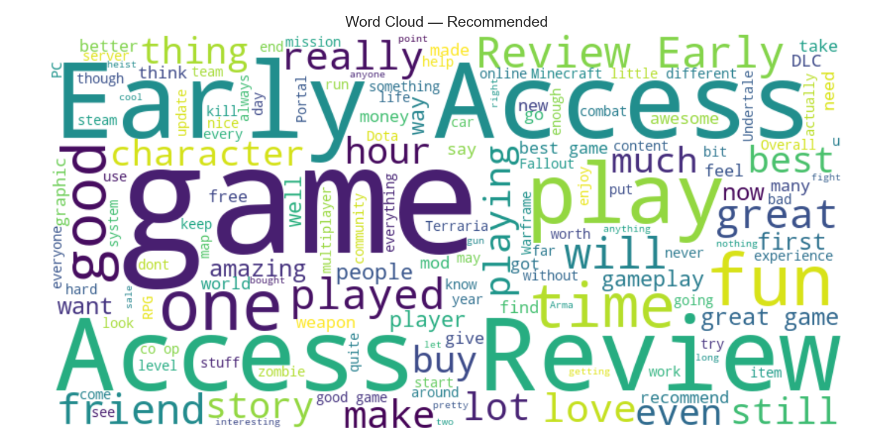
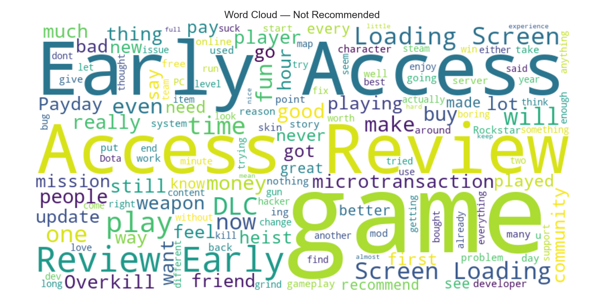
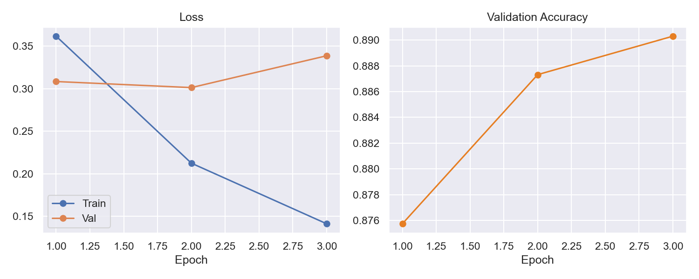
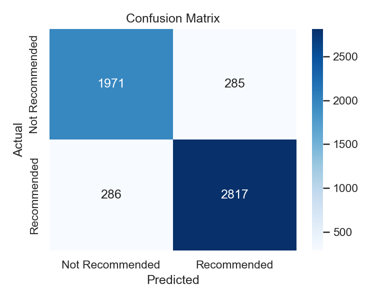
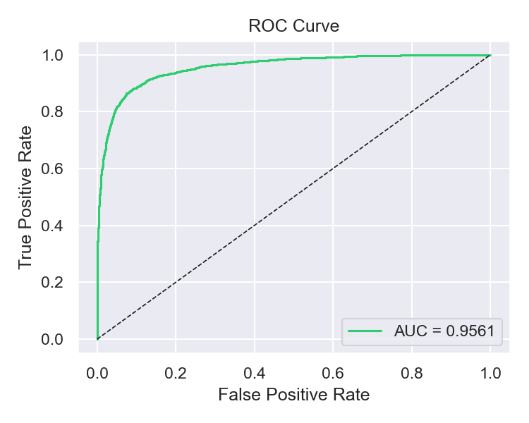
Steam Review Sentiment Analysis with DistilBERT
A binary sentiment analysis pipeline for Steam user reviews using DistilBERT. The project includes data preparation, exploratory data analysis, text preprocessing, model training, and comprehensive evaluation on a balanced subset of 50,000 reviews sampled from the top 20 Steam games. The model achieved an accuracy of 89% with a ROC-AUC of 0.956.
Other Projects
InstaCapt: AI Instagram Caption Generator
An AI-powered image captioning application using a fine-tuned BLIP model with FastAPI, Streamlit, and Vue.js interfaces.
Steam Game Popularity Predictor
A machine learning application that predicts Steam game popularity using CatBoost, featuring interactive visualizations and batch CSV predictions.
Green Wallet Web Client
A responsive frontend for a digital wallet application built with Vue.js, featuring a clean user interface and seamless integration with backend services.
Green Wallet Backend
A Python backend for a digital wallet application, providing database integration and API services for the Green Wallet web client.